DOTA 2 Replay Manager is an open source application for Windows, Mac and Linux that lets you parse and manage your DOTA 2 replays. It requires no sign up and displays no ads.
I love DOTA 2 and have been playing DotA since before it was cool. In all this time, I found that the best way for me to improve was to analyze and watch replays.
That is the basic principle of the DOTA 2 Replay Manager - make it simple to analyze and watch your DOTA 2 replays.
Valve has done an amazing job creating DOTA 2 but sadly their replay management system is non-existent so that is why I decided to create the DOTA 2 Replay Manager.
Don't forget to share the love; you may not need the DOTA 2 Replay Manager, but some of your friends might.
If you would like to help out with translation or artwork please email me. If you find any bugs don't hesitate to create an issue ticket on
github.com/d2rm/d2rm/issues.
Finally, since I am the one and only developer of this application, I implore you, if you can donate any sum of money, it would be greatly appreciated and go directly towards further development and new features.
Things that donations could fund:
- - Graphs, graphs and more graphs!
- - Heatmaps (e.g. vision, movement, deaths, etc.)
- - Naming replays
- - Adding descriptions to replays
- - Code cleanup, performance optimization and dependency updates
Future development will be dependant on your support.
-- Pavel Yarmak (dota2replaymanager [at] gmail.com)

 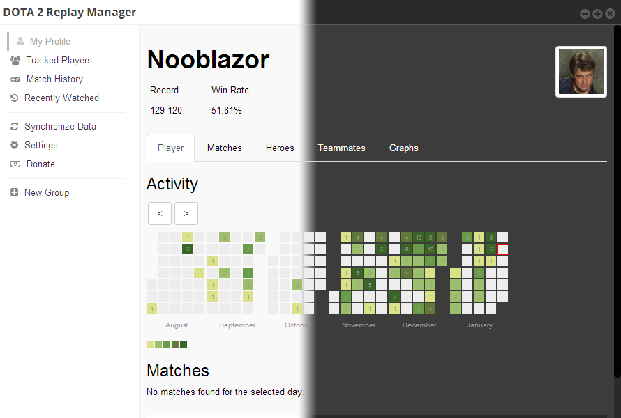
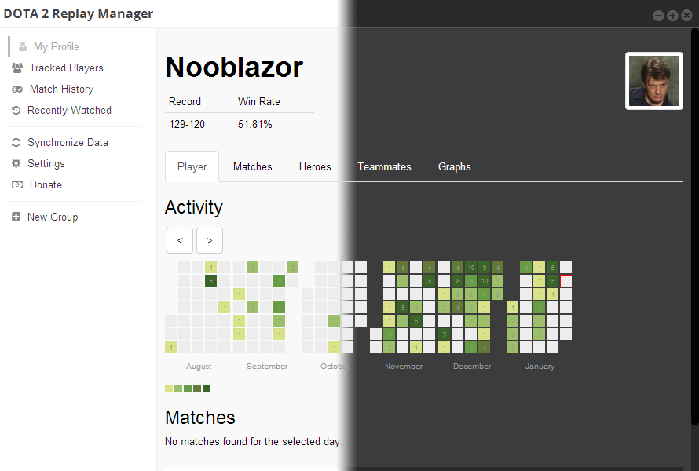
 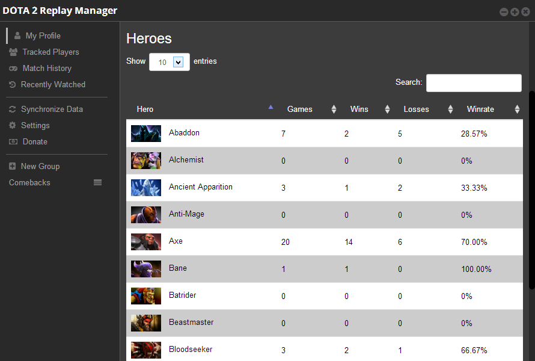
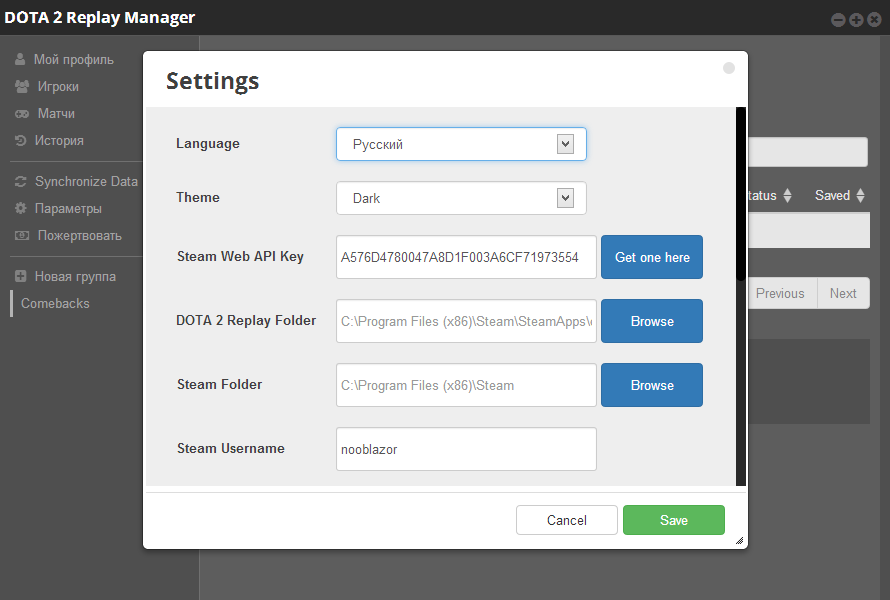
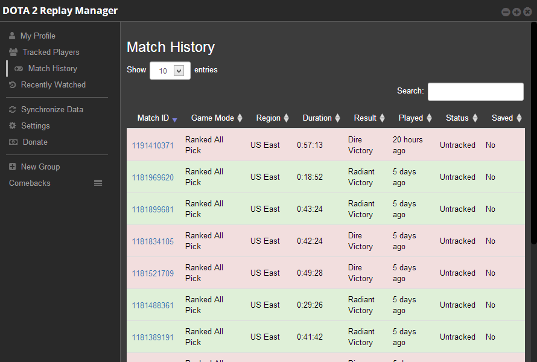
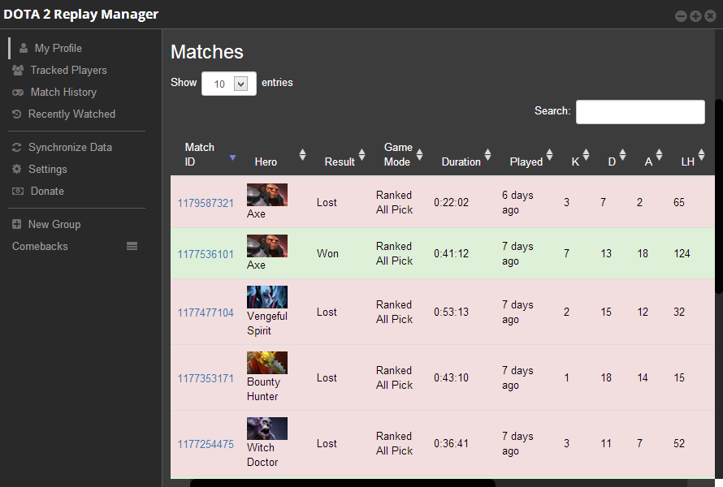
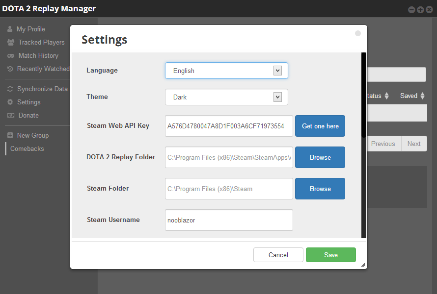
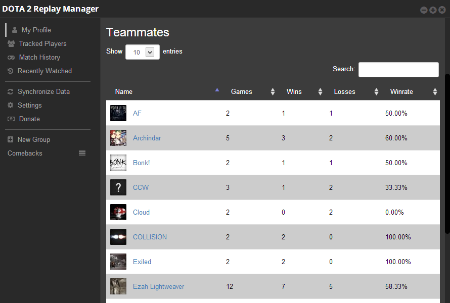
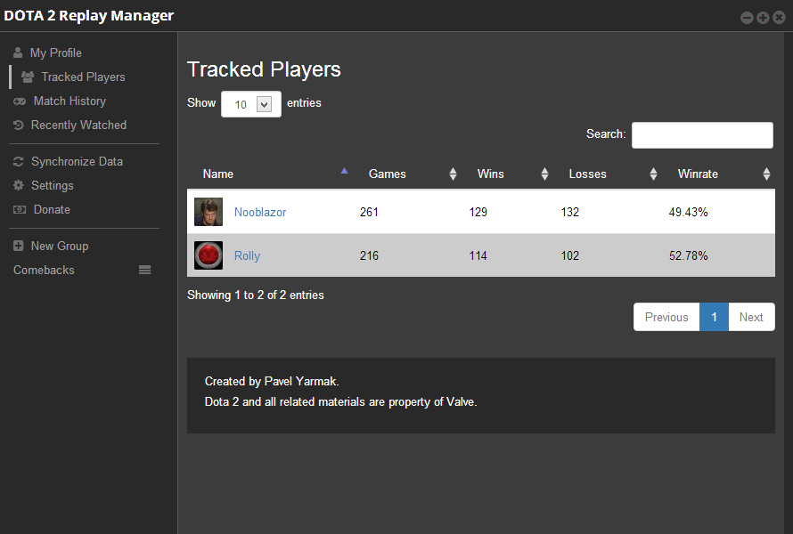
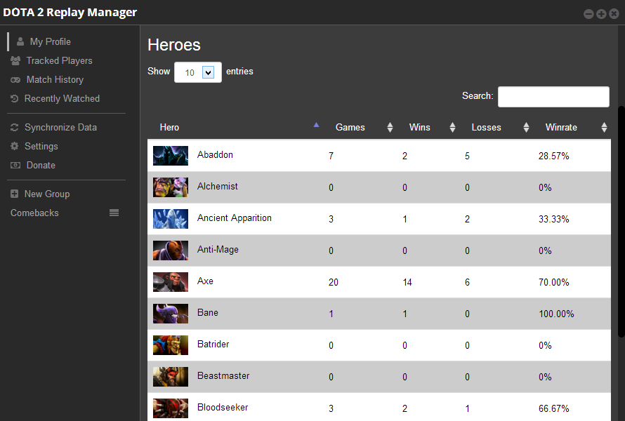
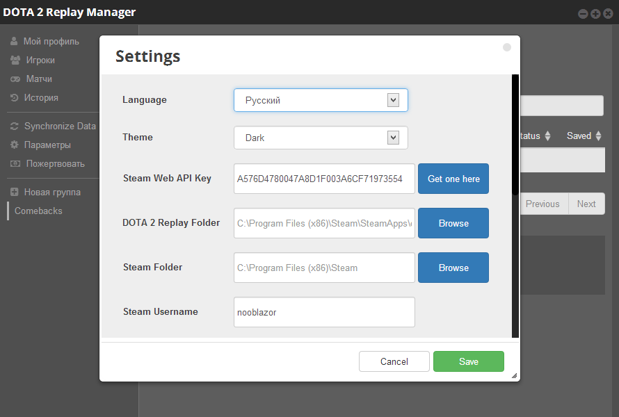
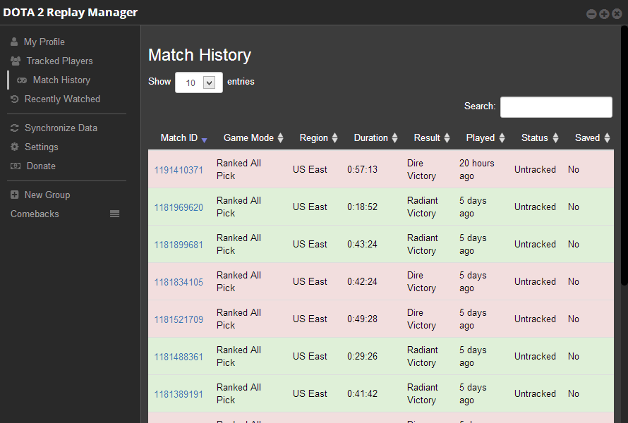
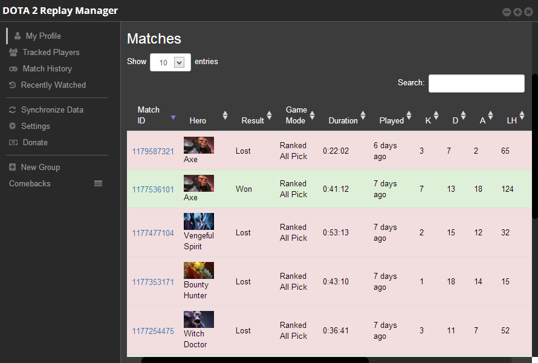
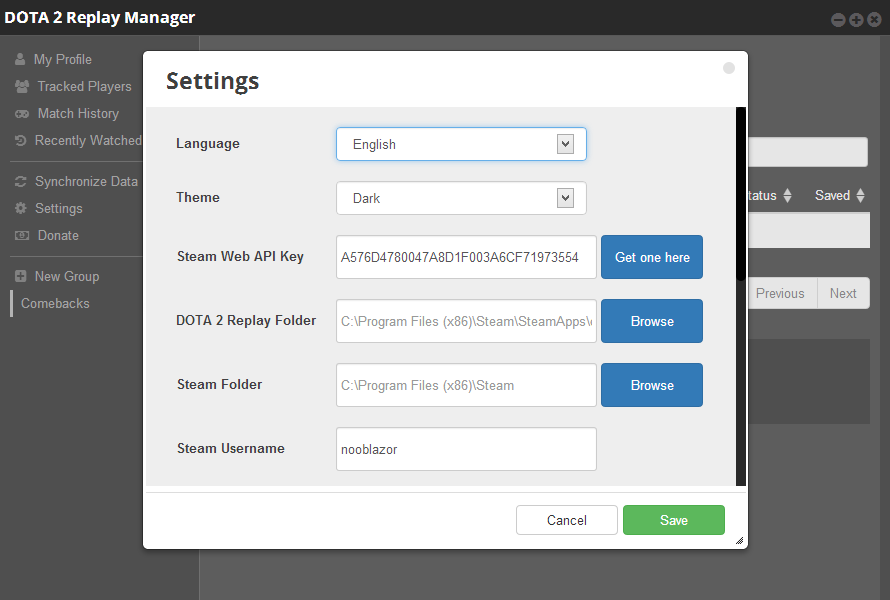
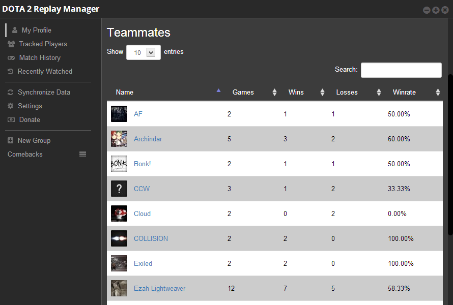
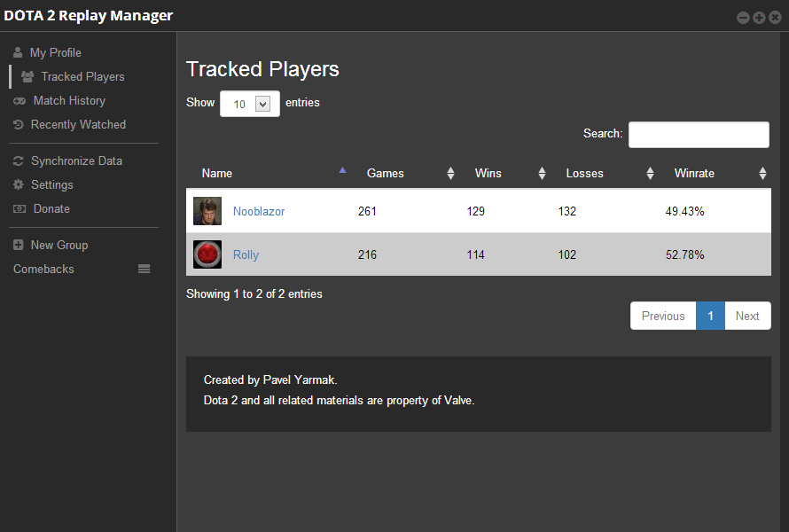